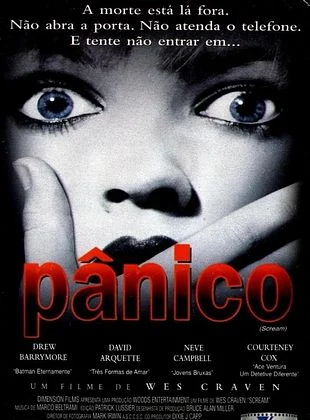
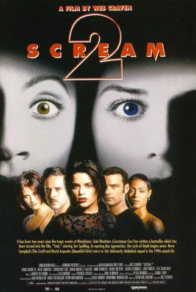
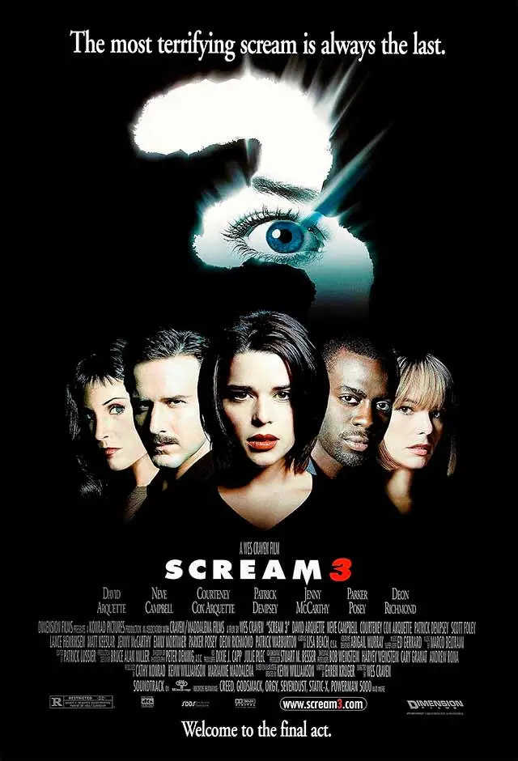

Destaques de Terror
Panico

Genero: Meta-horror / slasher / Mistério
Lançamento: 1996
Assistir trailer
Nota: ⭐⭐⭐⭐⭐ (5/5)
Sinopse:Sidney Prescott (Neve Campbell) começa a desconfiar que a morte de dois estudantes está relacionada com o falecimento da sua mãe, há cerca de um ano. Enquanto isso, os jovens da pacata cidadezinha começam a receber ligações de um maníaco que faz perguntas sobre filmes de horror. Quem erra, morre. As perguntas seguem uma lógica que será desvendada numa grande festa escolar.
Panico2

Genero: Meta-horror / slasher / Mistério
Lançamento: 1997
Assistir trailer
Nota: ⭐⭐⭐⭐ (4/5)
Sinopse: Dois anos pós o massacre em Woodsboro, Sidney Prescott (Neve Campbell) e Randy Meeks estão tentando refazer suas vidas em uma nova cidade. Estudando no colégio de Windsor, eles vão lidar com uma nova onda de assassinatos quando o terrível psicopata retorna para assombrá-los nas vésperas do lançamento do filme baseado nos seus crimes.
Panico 3

Genero: Slasher / Misterio / Meta-horror
Lançamento: 1997
Assistir trailer
Nota:⭐⭐⭐⭐ (4/5)
Sinopse: Um novo filme da série, baseada nos assassinatos de Woodsboro, está sendo produzido e Sidney Prescott (Neve Campbell) percebe que não pode mais fugir de seu passado. Inspirado em vários filmes de terror, o assassino psicopata volta a atacar e desta vez todas as regras foram quebradas e tudo pode acontecer.
terrifier 1

Genero: Slasher / Gore / Terror independente
Lançamento: 2016
Assistir trailer
Nota:⭐⭐⭐ (3/5)
Sinopse: Em Terrifier, um programa de televisão passa. Nele, um repórter entrevista uma mulher gravemente desfigurada, a única sobrevivente de um massacre ocorrido no Halloween anterior. Brown menciona que o corpo do assassino, conhecido apenas como "Art the Clown", desapareceu do necrotério. Na véspera do Halloween, as garotas Dawn (Catherine Corcoran) e Tara (Jenna Kanell) procuram a melhor festa da cidade. Mas, em vez de passar a noite com álcool e garotos bonitos, eles vivenciam o momento mais cruel de suas vidas. Quando param em uma pequena lanchonete e pedem uma selfie ao palhaço Art (David Howard Thornton), Dawn e Tara não suspeitam de nenhum mal. Mas quando as jovens encontram o homem mascarado assustador novamente naquela mesma noite, o horror começa. Porque Art é um palhaço assassino - e tem suas próximas vítimas em vista...
terrifier 2

Genero: Slasher / Gore / Fantasia Sombria
Lançamento: 2022
Assistir trailer
Nota:⭐⭐⭐⭐ (4/5)
Sinopse: Terrifier 2 se passa um ano depois do primeiro filme. Acordando no necrotério após seu massacre na noite de Halloween do ano passado, Art the Clown (David Howard Thornton) está de volta no tempo para o Dia da Reforma! Desta vez, ele está de olho na jovem Sienna (Lauren LaVera) e seu irmão mais novo, Jonathan (Elliott Fullam). Porque é Halloween mais uma vez e a sede de assassinato do sinistro malabarista deve ser satisfeita. A fantasia caseira de Halloween de Sienna e sua trágica história familiar têm uma conexão misteriosa com os assassinatos que o homem de pesadelo com a fantasia de palhaço cometerá novamente naquela noite.
terrifier 3

Genero: Slasher / Gore / Terror Natalino
Lançamento: 2024
Assistir trailer
Nota:⭐⭐⭐⭐⭐ (4/5)
Sinopse: Terrifier 3 é a continuação dos filmes de terror Terrifier (2018) e Terrifier 2 (2022). O palhaço psicopata Art (David Howard Thornton) está de volta com ainda mais sede de sangue. Depois de sair em uma onda de assassinatos em dois Halloweens, sendo, inclusive, ressuscitado por uma entidade maligna só para aterrorizar o condado de Miles, Art decide trocar de feriado. Após os eventos de Terrifier 2, o palhaço provoca o caos durante a noite de Natal, entrando em uma desenfreada jornada de vingança, com muitas mortes ao longo do caminho. Enquanto Art persegue suas novas vítimas, um grupo de sobreviventes do Halloween anterior se une para tentar detê-lo, criando uma batalha intensa entre o bem e o mal. A atmosfera natalina se transforma em um pesadelo sangrento, à medida que Art revela sua verdadeira natureza implacável. Prepare-se para mais sustos, criatividade macabra e cenas de gore que farão os fãs do gênero ficarem à beira de seus assentos.